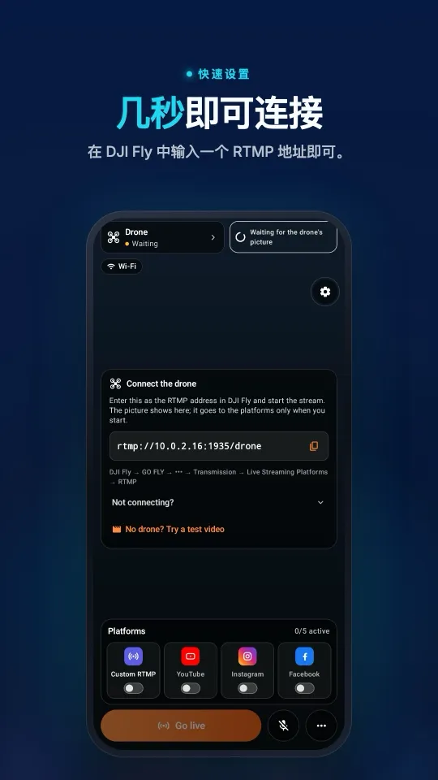
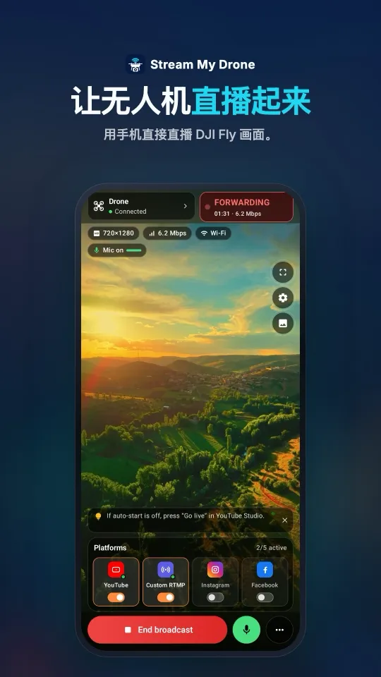
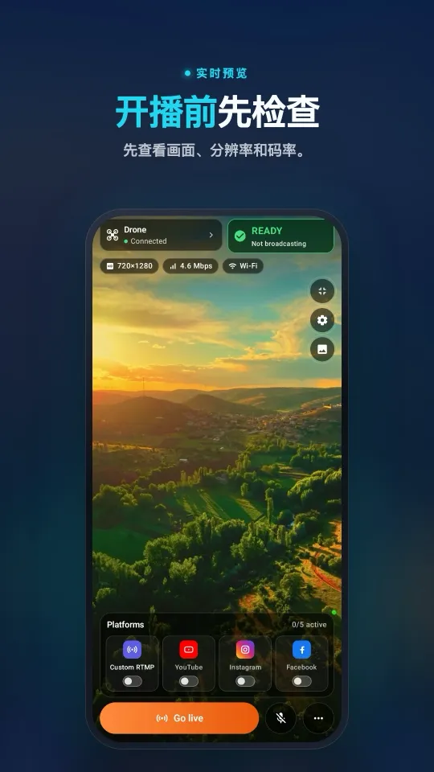
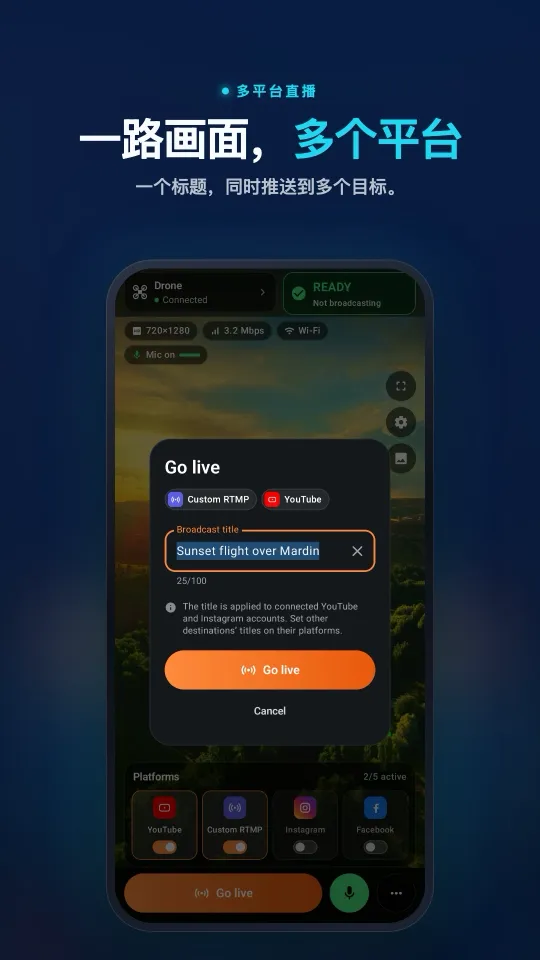
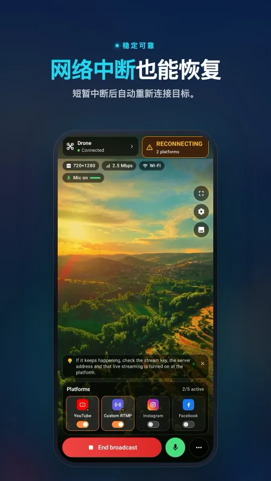

DJI RC 2 不接麦克风无法直播？“No built-in mic in current device”的解决方法
从 DJI Fly 1.16.0 开始，DJI RC 2、RC Pro 和 DJI 带屏遥控器在接入麦克风之前不会开始 RTMP 直播，而是显示“No built-in mic in current device”。你可以在遥控器上插一个 USB-C 麦克风或耳机，也可以把 Android 手机上的 Stream My Drone 当作虚拟蓝牙麦克风：DJI Fly 识别到麦克风后就会开始推流，不用另外购买任何东西。
要点速览
- 出现这个提示，是因为 RC 2、RC Pro 和 DJI 带屏遥控器没有内置麦克风，而 DJI Fly 1.16.0 及以上版本在 RTMP 直播前要求接入麦克风。
- 点击“OK”无法跳过：DJI Fly 会回到 RTMP 页面，直播不会开始。
- DJI 的方案是有线麦克风：在底部 USB-C 接口插入 USB-C 麦克风或耳机、USB-C 转 3.5 mm 转接头，或 DJI Mic 接收器。
- 不加设备的话，Android 版 Stream My Drone 会作为蓝牙麦克风连接 RC 2，提示随即消失。它不传送声音；想在直播中说话，在应用里打开手机麦克风即可。
- 虚拟麦克风需要 Android 手机。iOS 不允许应用充当蓝牙麦克风，所以用 iPhone 时仍需要有线麦克风。
“No built-in mic in current device”是什么意思
用 RC 2 在 DJI Fly 的 RTMP 页面点击 Start Livestream 时，会弹出窗口，说明设备没有内置麦克风，并要求先连接有线麦克风。DJI 论坛上的飞手也描述了同样的情况：点“OK”只会回到 RTMP 地址和推流密钥的输入框。这一变化从 DJI Fly 1.16.0 开始，之前的版本可以不带声音直播画面。DJI Fly 直播操作指南也确认，从该版本起需要插入麦克风。
| 遥控器 | 内置麦克风 | DJI Fly 1.16 及以上的 RTMP 直播 |
|---|---|---|
| DJI RC 2 | 无（DJI 常见问题） | 需要接入麦克风 |
| DJI RC Pro | 无 | 需要接入麦克风 |
| DJI 带屏遥控器 | 无 | 需要接入麦克风 |
| DJI RC Pro 2 | 有 | 不受此提示影响 |
| 搭配手机的 DJI RC-N2 或 RC-N3 | 手机的麦克风 | 不受此提示影响 |
无论用哪种麦克风，RC 2 直播最高都是 720p。这个上限与麦克风提示无关。
DJI Fly 为什么要求接麦克风才能直播
DJI 客服在 2025 年 3 月于 DJI 论坛解释了这项改动：没有音轨的 RTMP 流给播放器的时间参考更少，可能增加延迟并影响音画同步。因此从 DJI Fly 1.16.0 起，没有内置麦克风的遥控器必须接入麦克风，直播流里始终带有音轨。
2024 年的一篇论坛反馈也印证了这一点：不接麦克风的 RC 2 直播在直播平台上出现时间码错误，接上 USB-C 麦克风后错误消失。这个要求针对的是音轨，与你是否想说话无关。
在手机上的样子从连接 DJI Fly 到多平台同时直播，一个界面全部搞定。




去掉麦克风提示的几种方法
| 方法 | 需要什么 | 效果 |
|---|---|---|
| USB-C 麦克风或耳机 | 插在 RC 2 底部 USB-C 接口的麦克风 | DJI 推荐的方式；声音由遥控器送出 |
| USB-C 转 3.5 mm 转接头 | 转接头加一副带麦克风的耳机 | 效果相同；DJI 列为支持方式 |
| DJI Mic 或 Mic 2 接收器 | 插在 USB-C 接口的接收器 | 可用且音质更好；最贵的方案 |
| 蓝牙耳机（AirPods） | 与遥控器配对的耳机 | 反馈不一：有人能直播，有人几秒后出现“Livestream error”，也有人连不上 |
| Stream My Drone 虚拟麦克风 | 装有 Stream My Drone 的 Android 手机 | 无需额外设备即可去掉提示；遥控器不传送声音 |
如果你本来就用 Stream My Drone 在手机上接收无人机画面，最后这个方法用的就是你手上的那部手机，遥控器的 USB-C 接口也能空出来。
用虚拟蓝牙麦克风解决（Android）
- 在 Android 手机上安装 Stream My Drone从 Google Play 下载（Android 9 及以上；虚拟麦克风需要应用 1.2 或更高版本）。这部手机负责接收 DJI Fly 的直播流并推送到你的平台。
- 把手机和 RC 2 配对一次在 RC 2 和手机上都打开蓝牙，然后在手机的蓝牙设置里完成配对。我们测试的那台 RC 2 显示的名称是
QCOM-BTD。 - 在 Stream My Drone 中连接在应用中打开 ••• → 虚拟蓝牙麦克风，允许“附近的设备”权限，选择 RC 2，点“连接 RC 2”。连接后主界面会出现麦克风标记。在你点“断开连接”之前，连接会一直保持。
- 在 DJI Fly 中开始推流让 RC 2 连上手机热点或同一个 Wi-Fi。在 DJI Fly 中打开 GO FLY → ••• → Transmission → Live Streaming Platforms → RTMP，输入 Stream My Drone 显示的地址，点 Start Livestream。麦克风提示不会再出现。菜单详情见 DJI Fly RTMP 设置。
- 确认画面并开播无人机画面会出现在 Stream My Drone 中。选择平台后点“开始直播”；YouTube 一键即可连接。平台端的设置见 YouTube 指南。
已于 2026 年 10 月和 11 月用 DJI RC 2 和 Samsung Galaxy S23 测试。DJI 可能会在后续 DJI Fly 版本中修改这项检查；如果更新后提示又出现，请在开始推流前从 Stream My Drone 重新连接。
直播会有声音吗？
虚拟麦克风只是让 DJI Fly 通过检查，并不传送声音，所以遥控器发出的是静音。想和观众说话，就在 Stream My Drone 中点“开始直播”旁边的麦克风按钮：在你关闭之前，手机自己的麦克风会在所有平台上替换 DJI Fly 的声音。不需要声音就保持关闭。
iPhone、RC Pro 及其他组合
- iPhone：iOS 不允许应用把 iPhone 作为蓝牙麦克风提供给其他设备，所以虚拟麦克风仅支持 Android。使用 iPhone 时，请在 RC 2 上插 USB-C 麦克风，再用 iPhone 版 Stream My Drone 接收并转发直播流。
- DJI RC Pro 和带屏遥控器：它们也会出现同样的提示，但我们还没有用它们测试过虚拟麦克风。稳妥的做法是用 USB-C 麦克风。
- RC-N2 和 RC-N3：DJI Fly 运行在自带麦克风的手机上，所以这个提示不是问题。让 DJI Fly 留在那部手机上，用第二部手机或电脑接收直播流。
- 没有第二部手机：在 RC 2 上插 USB-C 麦克风，直接从 DJI Fly 推流到平台。
故障排查
- 列表里没有 RC 2：先在手机的蓝牙设置中配对。应用只列出已配对的设备，不会扫描。
- 提示仍然出现：等应用显示已连接后，退出并重新打开 DJI Fly 的 RTMP 页面，再点 Start Livestream。
- 几秒后出现“Livestream error”：这是与麦克风提示不同的问题。请确认 RC 2 和手机在同一网络，并且 RTMP 地址与应用中显示的一致。
- 连接断开：应用会通过通知在后台保持连接。如果蓝牙被关闭过，请在应用中重新连接。
- 应用里有画面，平台上没有：本地直播流正常。请在 Stream My Drone 中检查平台连接或推流密钥。
资料来源
麦克风要求和 RC 2 的 720p 上限：DJI Fly App 直播操作指南。RC 2 没有麦克风：DJI RC 2 常见问题。DJI 论坛上的用户反馈和 DJI 的解释：Not allowing me to livestream without a connected mic 和 RC2 controller corrupt rtmp streaming without microphone。核实于 2026 年 11 月 5 日。
相关指南：DJI Fly RTMP 设置和同时推流到多个平台。
常见问题
DJI RC 2 不接麦克风可以直播吗？
DJI Fly 1.16.0 及以上版本不行：应用会要求麦克风，在接入之前不会开始 RTMP 推流。USB-C 麦克风或耳机可以解决；Android 版 Stream My Drone 也能充当虚拟蓝牙麦克风，无需额外设备。
DJI Fly 为什么提示“No built-in mic in current device”？
RC 2、RC Pro 和 DJI 带屏遥控器没有自己的麦克风。从 1.16.0 版起，DJI Fly 在 RTMP 直播前要求有音频来源，因为据 DJI 说明，没有音轨的直播流可能出现延迟和音画不同步。
AirPods 能解决 DJI RC 2 的麦克风提示吗？
有时可以。DJI 论坛上有飞手反馈，配对 AirPods 后提示消失，但有人几秒后出现“Livestream error”，也有人根本连不上耳机。DJI 支持的方式是有线 USB-C 麦克风。
Stream My Drone 的虚拟麦克风会传送我的声音吗？
不会。它只让 DJI Fly 识别到麦克风。需要解说时，在 Stream My Drone 中打开手机麦克风按钮，直播中 DJI Fly 的声音就会换成你的声音。
虚拟麦克风能在 iPhone 上用吗？
不能，需要 Android。iOS 不允许应用为其他设备充当蓝牙麦克风。iPhone 用户在 RC 2 上接有线麦克风后，仍可用 Stream My Drone 接收并转发直播流。
哪个 DJI Fly 版本开始要求麦克风？
DJI Fly 1.16.0。DJI 直播操作指南说明，从这个版本起，RC 2、RC Pro 和 DJI 带屏遥控器需要接入麦克风才能开始直播。
用手机让无人机直播
Android 和 iPhone 版 Stream My Drone 接收 DJI Fly 画面，并同时推送到 YouTube、Instagram、Facebook、TikTok、Twitch、Kick 或你自己的服务器。一次性购买，无订阅。

更多教程
无人机怎么直播？（5 步教程，2026）
无人机如何直播到 YouTube、Instagram、TikTok 或 Facebook：需要准备什么、4 种方法、5 步完成 DJI Fly RTMP 推流设置、需要多少网速，以及常见问题的解决办法，适用于 DJI RC 2、RC-N2 和 RC-N3。
DJI Fly 提示“Livestream error”：原因和逐一解决办法
DJI Fly 提示“Livestream error”或“Starting livestream failed”？RTMPS、推流密钥、账号、麦克风、网络等 8 个真实原因，以及每个原因的解决办法。并说明为什么只有 720p。
哪些大疆无人机可以直播？完整的机型和遥控器清单
所有能在 DJI Fly 中直播的大疆无人机，从 Mini 2、Mini 4K 到 Mavic 4 Pro、Avata 360；哪些遥控器可用，以及 720p 和麦克风方面的限制。并附检查自己机型的方法。
如何用无人机直播婚礼
用大疆无人机为不能到场的亲友直播婚礼：方案步骤、设备清单、不公开的 YouTube 链接、手机或笔记本的设置方式，以及必须遵守的安全规则。使用 DJI RC 2 时，不用电脑也能开播。
如何用 DJI Flip 直播
用 RC 2、RC-N3 或 RC-N2 直播 DJI Flip：手机与电脑的 RTMP 推流设置，掌上起降和手机直连的区别，竖屏构图以及平台检查。
如何用 DJI Lito X1 直播
用 RC 2、RC-N3 或 RC-N2 直播 DJI Lito X1：DJI Fly RTMP 推流设置、手机与电脑方案、平台设置以及实用的故障排查。
如何用 DJI Lito 1 直播
用 RC 2、RC-N3 或 RC-N2 直播 DJI Lito 1：DJI Fly RTMP 推流设置、手机与电脑方案、平台设置以及实用的故障排查。
如何用 DJI Air 3S 直播
把 DJI Air 3S 直播到 YouTube、Instagram 或 Facebook：选择遥控器，把 DJI Fly 的 RTMP 推流连接到手机或电脑，并检查输出画面。
如何用 DJI Air 3 直播
把 DJI Air 3 直播到 YouTube、Instagram 或 Facebook：选择遥控器，把 DJI Fly 的 RTMP 推流连接到手机或电脑，并检查输出画面。
如何用 DJI Mavic 4 Pro 直播
用 RC 2 或 RC Pro 2 把 DJI Mavic 4 Pro 的画面推流到手机或电脑：检查 DJI Fly RTMP、两款遥控器的麦克风差异、720p 限制和平台设置。
如何用 DJI Mavic 3、Classic 或 Pro 直播
用 RC-N1 或 RC Pro 直播 DJI Mavic 3、Classic 或 Pro：DJI RC 为何不能直播，以及手机接收、电脑 RTMP 推流和画质限制。
如何用 DJI Mini 3 Pro 直播
用 RC-N1、手机上的 DJI Fly 和电脑上的 Stream My Drone 直播 DJI Mini 3 Pro，并了解初代 DJI RC 为什么无法使用这种 RTMP 推流方案。
如何用 DJI Mini 3 直播
通过 RC-N1 和 DJI Fly 把 DJI Mini 3 推流到电脑上的 Stream My Drone：了解 DJI RC 的限制、720p 图传画质以及如何在平台上开播。
如何用 DJI Mini 5 Pro 直播
用 RC 2 或 RC-N3 直播 DJI Mini 5 Pro：设置 DJI Fly RTMP 推流，用手机或电脑接收，再把无人机画面直播到 YouTube、Instagram 或 Facebook。
如何用 DJI Mini 4 Pro 直播
用 RC 2 或 RC-N2 直播 DJI Mini 4 Pro：手机和电脑两种设置方法、DJI Fly RTMP 推流参数、麦克风要求，以及如何确认平台已开播。
用 DJI 无人机实时识别和清点动物
Stream My Drone 能在无人机直播画面中识别山羊、绵羊、牛、马、驴和家禽，在直播中标出每只动物并自动计数，全部在你自己的电脑上完成。
DJI Fly RTMP 直播推流：完整设置指南
DJI Fly RTMP 直播推流怎么设置：设置项在哪里、地址该填什么、遥控器和电脑如何联网，以及推流失败时的常见问题和解决方法。
DJI Fly 为什么无法直播到 Instagram（附解决方法）
DJI Fly 没有 Instagram 选项，它的 RTMP 客户端也不支持 Instagram 要求的加密 RTMPS。本文讲清原因，并介绍如何照样用 DJI 无人机在 Instagram 开直播。
把 DJI 无人机变成电脑摄像头
用 Stream My Drone 虚拟摄像头，把 DJI 无人机变成 TikTok LIVE Studio、OBS、Zoom、Google Meet 或 Teams 的摄像头。包含设置步骤、使用场景和常见问题解决。
如何用 DJI Neo 直播
DJI Neo 怎么直播：哪种操控方式可以推流（手机、RC-N3、飞行眼镜）、DJI Fly 的 RTMP 设置，以及用 Stream My Drone 直播到 Instagram、TikTok 或 YouTube。
如何用 DJI Avata 2 直播
DJI Avata 2 穿越机画面怎么直播：把 Goggles 3 的画面共享到手机上的 DJI Fly，通过 RTMP 推流，再直播到 Instagram、TikTok 或 YouTube。
把 DJI Osmo 相机直播到 Instagram、TikTok 等平台
DJI Mimo 可以让 Osmo Action、Osmo Pocket 和 Osmo 360 相机通过 RTMP 推流。把推流发到 Stream My Drone，即可同时直播到 Instagram、TikTok 和 YouTube。
如何把 Osmo Pocket 3 直播到 Instagram 和 TikTok
如何用 Stream My Drone 把 DJI Osmo Pocket 3 通过 DJI Mimo 的 RTMP 推流同时直播到 Instagram、TikTok 和 YouTube，还能把它当作无线网络摄像头。
如何把 Osmo Action 相机直播到 Instagram 和 TikTok
用 Stream My Drone 把 DJI Osmo Action 6、5 Pro、4 或 3 通过 DJI Mimo 的 RTMP 推流，同时直播到 Instagram、TikTok、YouTube 和 Twitch。附设置步骤和推荐参数。
如何用 DJI 无人机在 TikTok 直播
用 DJI Fly 把 DJI 无人机画面直播到 TikTok：有推流密钥时直接推流，没有密钥时通过 TikTok LIVE Studio 和虚拟摄像头开播。附推荐设置和故障排查。
如何用 DJI 无人机在 Instagram 直播
用 DJI 无人机在 Instagram 开直播：在 instagram.com 获取推流地址和密钥，通过 Stream My Drone 转发 DJI Fly 的 RTMP 推流，最后点击 Go live。
如何把 DJI 无人机直播到 YouTube
把 DJI 无人机画面直播到 YouTube：开通直播功能，从 YouTube Studio 复制推流密钥，通过 Stream My Drone 转发 DJI Fly 的 RTMP 推流。附推荐设置和技巧。
如何用 DJI 无人机在 Facebook 直播
把 DJI 无人机画面直播到 Facebook：从 Live Producer 获取 RTMPS 服务器地址和推流密钥，通过 Stream My Drone 转发 DJI Fly 的推流，然后开播。
如何把 DJI 无人机直播到 Twitch
把 DJI 无人机画面直播到 Twitch：从 Creator Dashboard 复制推流密钥，在 Stream My Drone 中把 Twitch 添加为自定义 RTMP 推流目标，然后开播。
如何把 DJI 无人机直播到 Kick
把 DJI 无人机画面直播到 Kick：从 Kick 后台复制推流地址和密钥，在 Stream My Drone 中添加为自定义 RTMP 推流目标，然后开播。
把 DJI 无人机同时直播到多个平台
用 Stream My Drone 把一路 DJI 无人机直播同时推流到 TikTok、Instagram、YouTube、Facebook、Twitch 和 Kick——免费、本地运行，无需转推服务。
Stream My Drone 与 Restream：无人机直播该选哪个？
把 DJI 无人机同时直播到多个平台，选 Restream 云端转推，还是在自己电脑上运行的 Stream My Drone？从费用、水印、Instagram、竖屏视频等方面比较各自的优势。
不用搭建 NGINX 和 OBS，也能直播 DJI 无人机
把 DJI Fly 接入 OBS 的常见做法是搭建 NGINX RTMP 服务器、改配置文件、添加媒体源。本文说明这套流程要做哪些事，以及用一个应用就能省掉它的方法。